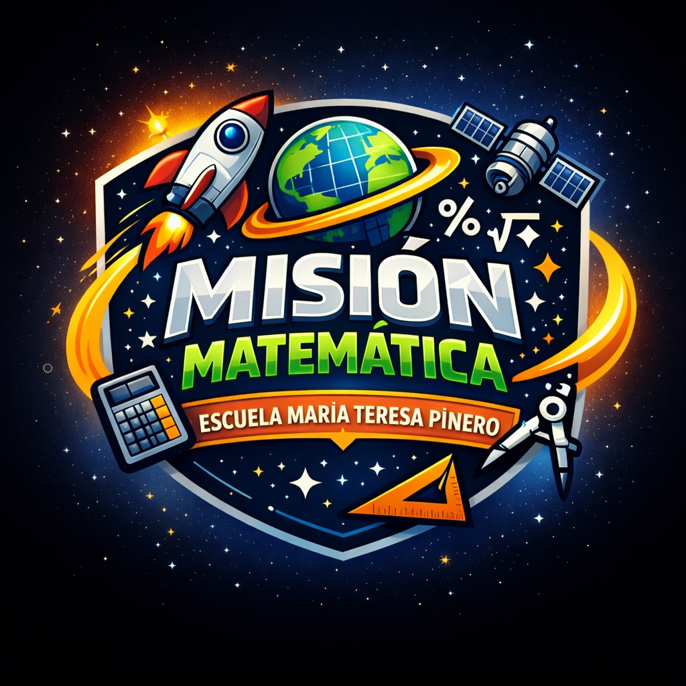
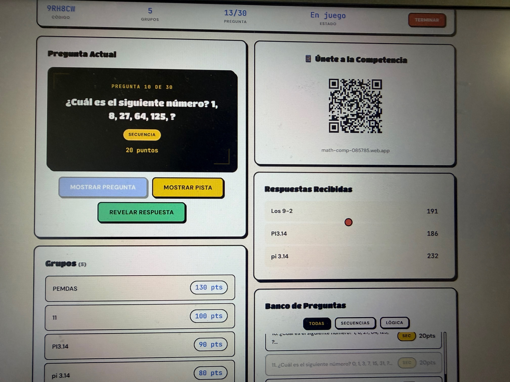
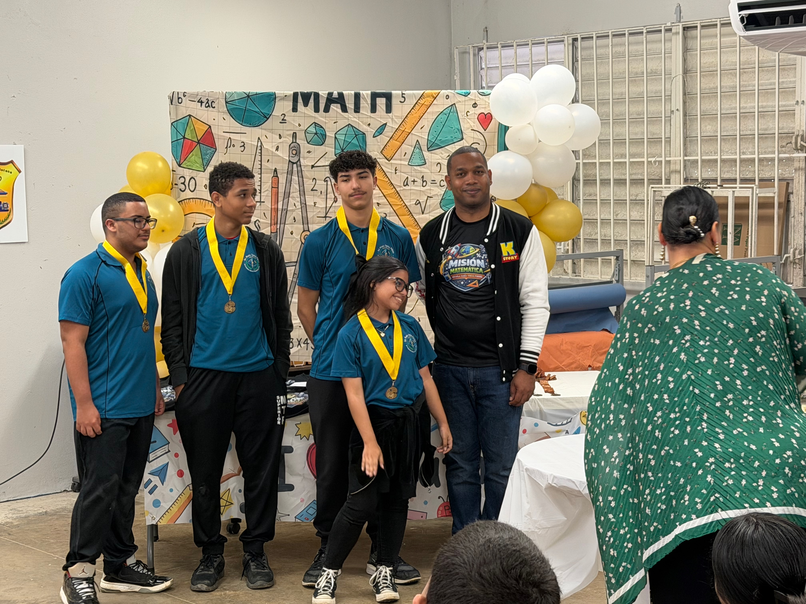
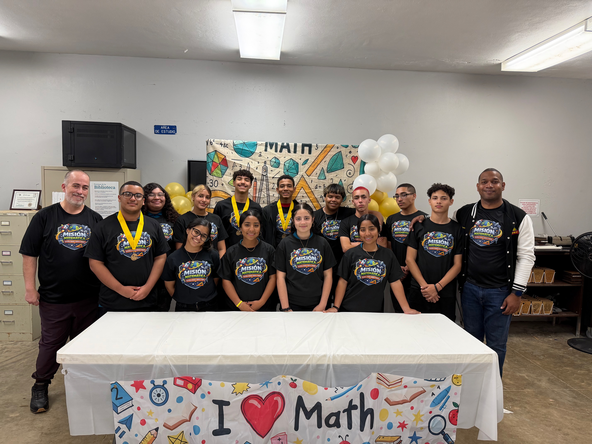

15%
Incrementar el rendimiento académico en matemáticas de los estudiantes participantes
3+
Participar en al menos tres competencias matemáticas durante el año escolar
Iniciando Misión...

Fomentar la excelencia matemática y el pensamiento crítico
Fomentar la excelencia matemática y el pensamiento crítico entre los estudiantes de décimo grado mediante experiencias educativas enriquecedoras que trasciendan el currículo tradicional. Nuestro club se compromete a cultivar una comunidad de aprendizaje colaborativo donde cada estudiante desarrolle confianza en sus habilidades matemáticas, descubra aplicaciones prácticas de las matemáticas en la vida cotidiana, y se prepare para competir exitosamente en olimpiadas y concursos académicos a nivel local, regional y nacional.
Ser reconocidos como el club de matemáticas líder en nuestra región, donde los estudiantes no solo dominan conceptos matemáticos avanzados, sino que también desarrollan pasión por la investigación matemática y la resolución creativa de problemas. Aspiramos a formar futuros profesionales en carreras STEM que contribuyan significativamente al desarrollo científico y tecnológico de Puerto Rico, manteniendo siempre los valores de integridad académica, trabajo en equipo y perseverancia.
Enriquecer la educación matemática formal con actividades extracurriculares que desafíen y motiven a los estudiantes
Preparar a los estudiantes para participar en competencias matemáticas regionales, nacionales e internacionales
Desarrollar habilidades de investigación matemática y metodología científica en el análisis de problemas complejos
Promover el aprendizaje colaborativo y el intercambio de estrategias de resolución de problemas entre pares
Desarrollar autoconfianza y motivación de los estudiantes hacia las matemáticas y las ciencias
Práctica intensiva con problemas de olimpiadas matemáticas, estrategias heurísticas y técnicas de demostración
Desarrollo de proyectos de investigación, análisis de datos, uso de software matemático (GeoGebra, Desmos) y preparación de presentaciones científicas
Exploración de temas matemáticos avanzados, paradojas, historia de las matemáticas y aplicaciones contemporáneas
Sesión de bienvenida e inscripción. Talleres introductorios de estrategias de resolución de problemas y metodología de investigación matemática
Formación InicialCompetencia interna de resolución de problemas. Sesiones intensivas de preparación y simulacros de exámenes competitivos
CompetenciaVisita a la Universidad de Puerto Rico, Recinto de Río Piedras. Interacción con profesores del Departamento de Matemáticas. Charlas sobre carreras STEM
Experiencia UniversitariaPresentación de proyectos de investigación del primer semestre. Evaluación y retroalimentación de actividades. Reconocimientos a participantes destacados
Evaluación y ReconocimientosInicio de proyectos de investigación del segundo semestre. Mentoría en metodología científica. Desarrollo de hipótesis y diseño experimental
Proyectos de InvestigaciónCelebración especial con actividades diarias: juegos matemáticos, exposiciones, charlas de matemáticos invitados, competencia escolar 'Reto Matemático', día de π (3/14), y feria de proyectos
Evento EspecialParticipación en competencia regional de matemáticas. Preparación intensiva y simulacros. Análisis post-competencia y áreas de mejora
Competencia RegionalSimposio final de investigaciones. Ceremonia de reconocimientos y certificados. Evaluación del impacto del club y planificación para el próximo año
CulminaciónIncrementar el rendimiento académico en matemáticas de los estudiantes participantes
Participar en al menos tres competencias matemáticas durante el año escolar
Resolver problemas no rutinarios y desarrollar estrategias heurísticas
Preparación intensiva para competir exitosamente
Proyectos que conectan teoría con aplicaciones del mundo real
Exposición a carreras STEM y ambiente universitario
Celebración especial con múltiples actividades
Capturando los mejores momentos de nuestras actividades matemáticas






Nota: Las fotos de nuestras actividades se actualizarán regularmente a medida que avanza el año escolar. ¡Síguenos en nuestras redes sociales para ver más momentos!
Herramientas digitales para visualización y experimentación matemática
Explorar →El Club de Matemáticas Misión Matemática está abierto a todos los estudiantes de décimo grado apasionados por los números y el razonamiento lógico. No importa tu nivel actual, ¡lo que cuenta es tu curiosidad y determinación!
Escuela Superior María Teresa Piñeiro
Sabana Seca, Toa Baja, PR
Prof. Yonatan Guerrero Soriano
Martes y Jueves: 2:30 - 4:00 PM
Viernes alternos: 2:30 - 4:00 PM
2024-2025